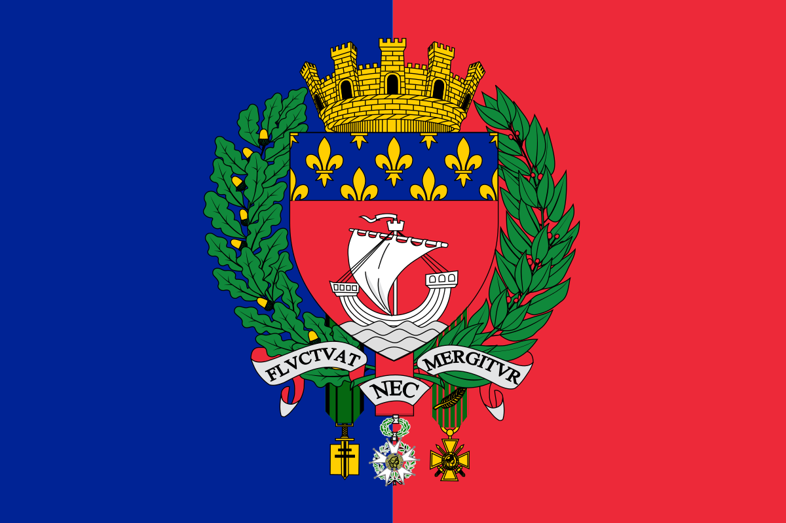

París
París, la capital de Francia, es una importante ciudad europea y un centro mundial del arte, la moda, la gastronomía y la cultura. Su paisaje urbano del siglo XIX está entrecruzado por amplios bulevares y el río Sena. Aparte de estos hitos, como la Torre Eiffel y la catedral gótica de Notre Dame del siglo XII, la ciudad es famosa por su cultura del café y las tiendas de moda de diseñador a lo largo de la calle Rue du Faubourg Saint-Honoré.